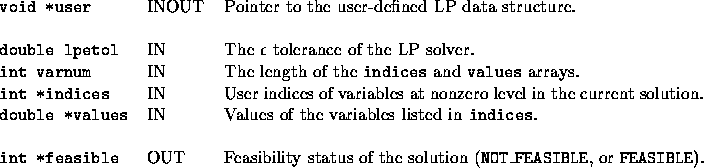
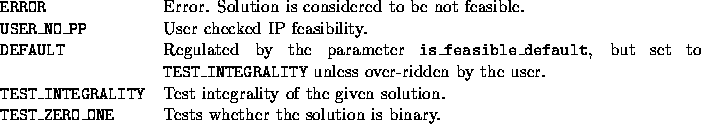

Back to SYMPHONY Home Page
Back to SYMPHONY Home Page
Next: user_send_feasible_solution
Up: User-written functions of the
Previous: user_get_upper_bounds
int user_is_feasible(void *user, double lpetol, int varnum, int
*indices, double *values, int *feasible)
- Description:
-
User tests the feasibility of the solution to the current LP
relaxation.
There is no post-processing. Possible defaults are testing integrality (
TEST_INTEGRALITY) and testing whether the solution is binary (
TEST_ZERO_ONE).
- Arguments:
-

- Return values:
-

- Wrapper invoked from:
- select_branching_object() after
pre-solving the LP relaxation of a child corresponding to a candidate and from
fathom_branch() after solving an LP relaxation.
Ted Ralphs
Fri Feb 11 13:47:59 CST 2000